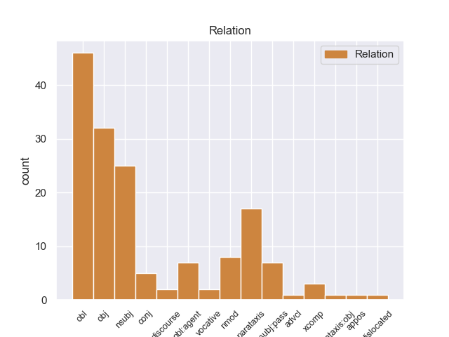
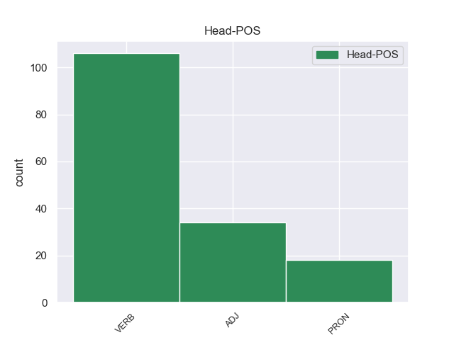
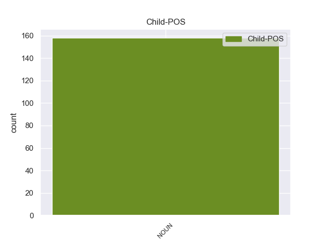

Distribution of features within this leaf



Agreement Rules sorted by frequency.
- When the dependent token is the object(obj) of the head token, and the head token is VERB and the dependent token is NOUN.
1 Abbiamo _ _ _ _ 0 _ _ _
2 fatto fare VERB V Gender=Masc|Number=Sing|Tense=Past|VerbForm=Part 0 _ _ _
3 un _ _ _ _ 0 _ _ _
4 enorme _ _ _ _ 0 _ _ _
5 sforzo sforzo NOUN S Gender=Masc|Number=Sing 2 obj _ _
6 per _ _ _ _ 0 _ _ _
7 far _ _ _ _ 0 _ _ _
8 sì _ _ _ _ 0 _ _ _
9 che _ _ _ _ 0 _ _ _
10 non _ _ _ _ 0 _ _ _
11 si _ _ _ _ 0 _ _ _
12 escludano _ _ _ _ 0 _ _ _
13 sempre _ _ _ _ 0 _ _ _
14 i _ _ _ _ 0 _ _ _
15 soliti _ _ _ _ 0 _ _ _
16 noti _ _ _ _ 0 _ _ _
17 . _ _ _ _ 0 _ _ _
18 [ _ _ _ _ 0 _ _ _
19 cit. _ _ _ _ 0 _ _ _
20 Mario _ _ _ _ 0 _ _ _
21 Monti _ _ _ _ 0 _ _ _
22 ] _ _ _ _ 0 _ _ _
23 eeeee _ _ _ _ 0 _ _ _
24 che _ _ _ _ 0 _ _ _
25 sforzo _ _ _ _ 0 _ _ _
26 ! _ _ _ _ 0 _ _ _
1 La _ _ _ _ 0 _ _ _
2 nuova _ _ _ _ 0 _ _ _
3 #comunicazione _ _ _ _ 0 _ _ _
4 #politica _ _ _ _ 0 _ _ _
5 è _ _ _ _ 0 _ _ _
6 anche _ _ _ _ 0 _ _ _
7 questa _ _ _ _ 0 _ _ _
8 : _ _ _ _ 0 _ _ _
9 il _ _ _ _ 0 _ _ _
10 movimento _ _ _ _ 0 _ _ _
11 di _ _ _ _ 0 _ _ _
12 #Grillo _ _ _ _ 0 _ _ _
13 organizzato organizzare VERB V Gender=Masc|Number=Sing|Tense=Past|VerbForm=Part 0 _ _ _
14 in _ _ _ _ 0 _ _ _
15 franchising franchising NOUN S Gender=Masc 13 obl _ _
16 > _ _ _ _ 0 _ _ _
17 http://t.co/9tpYSTg3 _ _ _ _ 0 _ _ _
1 La _ _ _ _ 0 _ _ _
2 versione versione NOUN S Gender=Fem|Number=Sing 6 nsubj _ _
3 non _ _ _ _ 0 _ _ _
4 mi _ _ _ _ 0 _ _ _
5 è _ _ _ _ 0 _ _ _
6 andata andare VERB V Gender=Fem|Number=Sing|Tense=Past|VerbForm=Part 0 _ _ _
7 bene _ _ _ _ 0 _ _ _
8 , _ _ _ _ 0 _ _ _
9 lo _ _ _ _ 0 _ _ _
10 avrò _ _ _ _ 0 _ _ _
11 il _ _ _ _ 0 _ _ _
12 sei _ _ _ _ 0 _ _ _
13 ? _ _ _ _ 0 _ _ _
14 .. _ _ _ _ 0 _ _ _
1 RT _ _ _ _ 0 _ _ _
2 @user _ _ _ _ 0 _ _ _
3 : _ _ _ _ 0 _ _ _
4 Odio _ _ _ _ 0 _ _ _
5 le _ _ _ _ 0 _ _ _
6 relazioni _ _ _ _ 0 _ _ _
7 a _ _ _ _ 0 _ _ _
8 distanza _ _ _ _ 0 _ _ _
9 , _ _ _ _ 0 _ _ _
10 il _ _ _ _ 0 _ _ _
11 frigo frigo NOUN S Gender=Masc 14 nsubj _ _
12 è _ _ _ _ 0 _ _ _
13 così _ _ _ _ 0 _ _ _
14 lontano lontano ADJ A Gender=Masc|Number=Sing 0 _ _ _
15 da _ _ _ _ 0 _ _ _
16 il _ _ _ _ 0 _ _ _
17 mio _ _ _ _ 0 _ _ _
18 letto _ _ _ _ 0 _ _ _
19 ! _ _ _ _ 0 _ _ _
20 ugh _ _ _ _ 0 _ _ _
21 .. _ _ _ _ 0 _ _ _
1 #ansa _ _ _ _ 0 _ _ _
2 " _ _ _ _ 0 _ _ _
3 Rosi _ _ _ _ 0 _ _ _
4 Mauro _ _ _ _ 0 _ _ _
5 , _ _ _ _ 0 _ _ _
6 annuncio _ _ _ _ 0 _ _ _
7 dimissioni _ _ _ _ 0 _ _ _
8 stasera _ _ _ _ 0 _ _ _
9 da _ _ _ _ 0 _ _ _
10 Vespa _ _ _ _ 0 _ _ _
11 " _ _ _ _ 0 _ _ _
12 ... _ _ _ _ 0 _ _ _
13 la _ _ _ _ 0 _ _ _
14 sigla sigla NOUN S Gender=Fem|Number=Sing 19 nsubj:pass _ _
15 di _ _ _ _ 0 _ _ _
16 la _ _ _ _ 0 _ _ _
17 trasmissione _ _ _ _ 0 _ _ _
18 sarà _ _ _ _ 0 _ _ _
19 cambiata cambiare VERB V Gender=Fem|Number=Sing|Tense=Past|VerbForm=Part 0 _ _ _
20 : _ _ _ _ 0 _ _ _
21 da _ _ _ _ 0 _ _ _
22 " _ _ _ _ 0 _ _ _
23 Vai _ _ _ _ 0 _ _ _
24 con _ _ _ _ 0 _ _ _
25 il _ _ _ _ 0 _ _ _
26 vento _ _ _ _ 0 _ _ _
27 " _ _ _ _ 0 _ _ _
28 a _ _ _ _ 0 _ _ _
29 " _ _ _ _ 0 _ _ _
30 Hocus _ _ _ _ 0 _ _ _
31 Pocus _ _ _ _ 0 _ _ _
32 " _ _ _ _ 0 _ _ _
1 RT _ _ _ _ 0 _ _ _
2 @user _ _ _ _ 0 _ _ _
3 : _ _ _ _ 0 _ _ _
4 Odio _ _ _ _ 0 _ _ _
5 le _ _ _ _ 0 _ _ _
6 relazioni _ _ _ _ 0 _ _ _
7 a _ _ _ _ 0 _ _ _
8 distanza _ _ _ _ 0 _ _ _
9 , _ _ _ _ 0 _ _ _
10 il _ _ _ _ 0 _ _ _
11 frigo _ _ _ _ 0 _ _ _
12 è _ _ _ _ 0 _ _ _
13 così _ _ _ _ 0 _ _ _
14 lontano lontano ADJ A Gender=Masc|Number=Sing 0 _ _ _
15 da _ _ _ _ 0 _ _ _
16 il _ _ _ _ 0 _ _ _
17 mio _ _ _ _ 0 _ _ _
18 letto letto NOUN S Gender=Masc|Number=Sing 14 obl _ SpaceAfter=No
19 ! _ _ _ _ 0 _ _ _
20 ugh _ _ _ _ 0 _ _ _
21 .. _ _ _ _ 0 _ _ _
1 #BoldiCapra _ _ _ _ 0 _ _ _
2 ha _ _ _ _ 0 _ _ _
3 fatto fare VERB V Gender=Masc|Number=Sing|Tense=Past|VerbForm=Part 0 _ _ _
4 più _ _ _ _ 0 _ _ _
5 ridere _ _ _ _ 0 _ _ _
6 con _ _ _ _ 0 _ _ _
7 questo _ _ _ _ 0 _ _ _
8 insulto _ _ _ _ 0 _ _ _
9 , _ _ _ _ 0 _ _ _
10 che _ _ _ _ 0 _ _ _
11 con _ _ _ _ 0 _ _ _
12 in _ _ _ _ 0 _ _ _
13 suoi _ _ _ _ 0 _ _ _
14 film _ _ _ _ 0 _ _ _
15 ... _ _ _ _ 0 _ _ _
16 Uomini uomo NOUN S Gender=Masc|Number=Plur 3 parataxis _ _
17 inutili _ _ _ _ 0 _ _ _
18 a _ _ _ _ 0 _ _ _
19 la _ _ _ _ 0 _ _ _
20 società _ _ _ _ 0 _ _ _
21 ! _ _ _ _ 0 _ _ _
1 @user _ _ _ _ 0 _ _ _
2 Giorno _ _ _ _ 0 _ _ _
3 .. _ _ _ _ 0 _ _ _
4 NO _ _ _ _ 0 _ _ _
5 , _ _ _ _ 0 _ _ _
6 se _ _ _ _ 0 _ _ _
7 l' _ _ _ _ 0 _ _ _
8 AMoroso _ _ _ _ 0 _ _ _
9 c _ _ _ _ 0 _ _ _
10 fa _ _ _ _ 0 _ _ _
11 un' _ _ _ _ 0 _ _ _
12 altra _ _ _ _ 0 _ _ _
13 esibizione _ _ _ _ 0 _ _ _
14 cme _ _ _ _ 0 _ _ _
15 qll quello PRON PD Gender=Masc|Number=Sing|PronType=Dem 0 _ _ _
16 d _ _ _ _ 0 _ _ _
17 Sabato sabato NOUN S Gender=Masc|Number=Sing 15 nmod _ _
18 io _ _ _ _ 0 _ _ _
19 NN _ _ _ _ 0 _ _ _
20 ce _ _ _ _ 0 _ _ _
21 la _ _ _ _ 0 _ _ _
22 posso _ _ _ _ 0 _ _ _
23 fare _ _ _ _ 0 _ _ _
24 *_* _ _ _ _ 0 _ _ _
1 ... _ _ _ _ 0 _ _ _
2 il _ _ _ _ 0 _ _ _
3 progetto progetto NOUN S Gender=Masc|Number=Sing 13 nsubj _ _
4 di _ _ _ _ 0 _ _ _
5 Mario _ _ _ _ 0 _ _ _
6 Monti _ _ _ _ 0 _ _ _
7 su _ _ _ _ 0 _ _ _
8 i _ _ _ _ 0 _ _ _
9 giovani _ _ _ _ 0 _ _ _
10 è _ _ _ _ 0 _ _ _
11 simile _ _ _ _ 0 _ _ _
12 a _ _ _ _ 0 _ _ _
13 quello quello PRON PD Gender=Masc|Number=Sing|PronType=Dem 0 _ _ _
14 di _ _ _ _ 0 _ _ _
15 Erode _ _ _ _ 0 _ _ _
16 a _ _ _ _ 0 _ _ _
17 Betlemme _ _ _ _ 0 _ _ _
18 ... _ _ _ _ 0 _ _ _
1 Inizio _ _ _ _ 0 _ _ _
2 a _ _ _ _ 0 _ _ _
3 subire _ _ _ _ 0 _ _ _
4 i _ _ _ _ 0 _ _ _
5 primi _ _ _ _ 0 _ _ _
6 effetti _ _ _ _ 0 _ _ _
7 di _ _ _ _ 0 _ _ _
8 lo _ _ _ _ 0 _ _ _
9 Stato _ _ _ _ 0 _ _ _
10 di _ _ _ _ 0 _ _ _
11 Polizia _ _ _ _ 0 _ _ _
12 inaugurato inaugurare VERB V Gender=Masc|Number=Sing|Tense=Past|VerbForm=Part 0 _ _ _
13 da _ _ _ _ 0 _ _ _
14 il _ _ _ _ 0 _ _ _
15 governo governo NOUN S Gender=Masc|Number=Sing 12 obl:agent _ _
16 #Monti _ _ _ _ 0 _ _ _
1 RT _ _ _ _ 0 _ _ _
2 @user _ _ _ _ 0 _ _ _
3 : _ _ _ _ 0 _ _ _
4 quanto _ _ _ _ 0 _ _ _
5 può _ _ _ _ 0 _ _ _
6 essere _ _ _ _ 0 _ _ _
7 perfetto perfetto ADJ A Gender=Masc|Number=Sing 0 _ _ _
8 il _ _ _ _ 0 _ _ _
9 cast _ _ _ _ 0 _ _ _
10 di _ _ _ _ 0 _ _ _
11 glee _ _ _ _ 0 _ _ _
12 ? _ _ _ _ 0 _ _ _
13 il _ _ _ _ 0 _ _ _
14 miglior _ _ _ _ 0 _ _ _
15 cast cast NOUN S Gender=Masc 7 parataxis _ _
16 di _ _ _ _ 0 _ _ _
17 sempre _ _ _ _ 0 _ _ _
18 . _ _ _ _ 0 _ _ _
1 Mario _ _ _ _ 0 _ _ _
2 Monti _ _ _ _ 0 _ _ _
3 è _ _ _ _ 0 _ _ _
4 un _ _ _ _ 0 _ _ _
5 rettiliano rettiliano ADJ A Gender=Masc|Number=Sing 0 _ _ _
6 , _ _ _ _ 0 _ _ _
7 figlio figlio NOUN S Gender=Masc|Number=Sing 5 conj _ _
8 di _ _ _ _ 0 _ _ _
9 Satana _ _ _ _ 0 _ _ _
10 #sapevatelo _ _ _ _ 0 _ _ _
11 #fatepresto _ _ _ _ 0 _ _ _
1 Mario _ _ _ _ 0 _ _ _
2 Monti _ _ _ _ 0 _ _ _
3 nominato nominare VERB V Gender=Masc|Number=Sing|Tense=Past|VerbForm=Part 0 _ _ _
4 senatore senatore NOUN S Gender=Masc|Number=Sing 3 xcomp _ _
5 a _ _ _ _ 0 _ _ _
6 vita _ _ _ _ 0 _ _ _
7 . _ _ _ _ 0 _ _ _
8 I _ _ _ _ 0 _ _ _
9 primi _ _ _ _ 0 _ _ _
10 momenti _ _ _ _ 0 _ _ _
11 di _ _ _ _ 0 _ _ _
12 il _ _ _ _ 0 _ _ _
13 post _ _ _ _ 0 _ _ _
14 - _ _ _ _ 0 _ _ _
15 Berlusconi _ _ _ _ 0 _ _ _
16 mi _ _ _ _ 0 _ _ _
17 fanno _ _ _ _ 0 _ _ _
18 terrore _ _ _ _ 0 _ _ _
19 ... _ _ _ _ 0 _ _ _
1 RT _ _ _ _ 0 _ _ _
2 @user _ _ _ _ 0 _ _ _
3 : _ _ _ _ 0 _ _ _
4 Non _ _ _ _ 0 _ _ _
5 ero _ _ _ _ 0 _ _ _
6 bella bello ADJ A Gender=Fem|Number=Sing 0 _ _ _
7 : _ _ _ _ 0 _ _ _
8 ero _ _ _ _ 0 _ _ _
9 alta _ _ _ _ 0 _ _ _
10 , _ _ _ _ 0 _ _ _
11 bionda _ _ _ _ 0 _ _ _
12 con _ _ _ _ 0 _ _ _
13 gli _ _ _ _ 0 _ _ _
14 occhi _ _ _ _ 0 _ _ _
15 azzurri _ _ _ _ 0 _ _ _
16 . _ _ _ _ 0 _ _ _
17 PROPRIO _ _ _ _ 0 _ _ _
18 ' _ _ _ _ 0 _ _ _
19 NA _ _ _ _ 0 _ _ _
20 SCHIFEZZA schifezza NOUN S Gender=Fem|Number=Sing 6 discourse _ SpaceAfter=No
21 . _ _ _ _ 0 _ _ _
22 #succedesolonellefanfiction _ _ _ _ 0 _ _ _
1 professor professore NOUN S Gender=Masc|Number=Sing 4 vocative _ _
2 #monti _ _ _ _ 0 _ _ _
3 : _ _ _ _ 0 _ _ _
4 bocciato bocciare VERB V Gender=Masc|Number=Sing|Tense=Past|VerbForm=Part 0 _ _ _
5 ! _ _ _ _ 0 _ _ _
6 #manovra _ _ _ _ 0 _ _ _
1 #Piazzapulita _ _ _ _ 0 _ _ _
2 Il _ _ _ _ 0 _ _ _
3 primo _ _ _ _ 0 _ _ _
4 applauso _ _ _ _ 0 _ _ _
5 è _ _ _ _ 0 _ _ _
6 a _ _ _ _ 0 _ _ _
7 l' _ _ _ _ 0 _ _ _
8 imprenditore _ _ _ _ 0 _ _ _
9 che _ _ _ _ 0 _ _ _
10 dice _ _ _ _ 0 _ _ _
11 politici politico NOUN S Gender=Masc|Number=Plur 12 vocative _ _
12 tutti tutto PRON PI Gender=Masc|Number=Plur|PronType=Ind 0 _ _ _
13 a _ _ _ _ 0 _ _ _
14 casa _ _ _ _ 0 _ _ _
15 . _ _ _ _ 0 _ _ _
16 #Monti _ _ _ _ 0 _ _ _
17 compreso _ _ _ _ 0 _ _ _
18 . _ _ _ _ 0 _ _ _
19 #Grillo _ _ _ _ 0 _ _ _
20 si _ _ _ _ 0 _ _ _
21 starà _ _ _ _ 0 _ _ _
22 fregando _ _ _ _ 0 _ _ _
23 le _ _ _ _ 0 _ _ _
24 mani _ _ _ _ 0 _ _ _
1 come _ _ _ _ 0 _ _ _
2 fa _ _ _ _ 0 _ _ _
3 a _ _ _ _ 0 _ _ _
4 piacer _ _ _ _ 0 _ _ _
5 vi _ _ _ _ 0 _ _ _
6 la _ _ _ _ 0 _ _ _
7 pioggia _ _ _ _ 0 _ _ _
8 ? _ _ _ _ 0 _ _ _
9 si _ _ _ _ 0 _ _ _
10 ok _ _ _ _ 0 _ _ _
11 è _ _ _ _ 0 _ _ _
12 bella bello ADJ A Gender=Fem|Number=Sing 0 _ _ _
13 quando _ _ _ _ 0 _ _ _
14 siete _ _ _ _ 0 _ _ _
15 in _ _ _ _ 0 _ _ _
16 casa casa NOUN S Gender=Fem|Number=Sing 12 advcl _ _
17 a _ _ _ _ 0 _ _ _
18 leggere _ _ _ _ 0 _ _ _
19 ma _ _ _ _ 0 _ _ _
20 allora _ _ _ _ 0 _ _ _
21 non _ _ _ _ 0 _ _ _
22 fa _ _ _ _ 0 _ _ _
23 differenza _ _ _ _ 0 _ _ _
24 , _ _ _ _ 0 _ _ _
25 è _ _ _ _ 0 _ _ _
26 in _ _ _ _ 0 _ _ _
27 lo _ _ _ _ 0 _ _ _
28 stare _ _ _ _ 0 _ _ _
29 fuori _ _ _ _ 0 _ _ _
30 la _ _ _ _ 0 _ _ _
31 differenza _ _ _ _ 0 _ _ _
1 L' _ _ _ _ 0 _ _ _
2 #Italia _ _ _ _ 0 _ _ _
3 non _ _ _ _ 0 _ _ _
4 è _ _ _ _ 0 _ _ _
5 un _ _ _ _ 0 _ _ _
6 paese _ _ _ _ 0 _ _ _
7 per _ _ _ _ 0 _ _ _
8 giovani _ _ _ _ 0 _ _ _
9 , _ _ _ _ 0 _ _ _
10 o _ _ _ _ 0 _ _ _
11 meglio _ _ _ _ 0 _ _ _
12 non _ _ _ _ 0 _ _ _
13 lo lo PRON PC Clitic=Yes|Gender=Masc|Number=Sing|Person=3|PronType=Prs 0 _ _ _
14 è _ _ _ _ 0 _ _ _
15 più _ _ _ _ 0 _ _ _
16 da _ _ _ _ 0 _ _ _
17 un _ _ _ _ 0 _ _ _
18 pezzo pezzo NOUN S Gender=Masc|Number=Sing 13 obl _ SpaceAfter=No
19 . _ _ _ _ 0 _ _ _
20 #Governo _ _ _ _ 0 _ _ _
21 #Monti _ _ _ _ 0 _ _ _
1 Scilipoti _ _ _ _ 0 _ _ _
2 : _ _ _ _ 0 _ _ _
3 « _ _ _ _ 0 _ _ _
4 Governo governo NOUN S Gender=Masc|Number=Sing 10 parataxis:obj _ _
5 Monti _ _ _ _ 0 _ _ _
6 ? _ _ _ _ 0 _ _ _
7 Qualcuno _ _ _ _ 0 _ _ _
8 lo _ _ _ _ 0 _ _ _
9 avrebbe _ _ _ _ 0 _ _ _
10 definito definire VERB V Gender=Masc|Number=Sing|Tense=Past|VerbForm=Part 0 _ _ _
11 una _ _ _ _ 0 _ _ _
12 dittatura _ _ _ _ 0 _ _ _
13 » _ _ _ _ 0 _ _ _
14 http://t.co/rHznNDGS _ _ _ _ 0 _ _ _
1 Mi _ _ _ _ 0 _ _ _
2 risulta _ _ _ _ 0 _ _ _
3 difficile _ _ _ _ 0 _ _ _
4 dir _ _ _ _ 0 _ _ _
5 lo _ _ _ _ 0 _ _ _
6 , _ _ _ _ 0 _ _ _
7 ma _ _ _ _ 0 _ _ _
8 le _ _ _ _ 0 _ _ _
9 più _ _ _ _ 0 _ _ _
10 lucide _ _ _ _ 0 _ _ _
11 analisi analisi NOUN S Gender=Fem 23 dislocated _ _
12 su _ _ _ _ 0 _ _ _
13 il _ _ _ _ 0 _ _ _
14 tremendo _ _ _ _ 0 _ _ _
15 orizzonte _ _ _ _ 0 _ _ _
16 di _ _ _ _ 0 _ _ _
17 governo _ _ _ _ 0 _ _ _
18 Monti _ _ _ _ 0 _ _ _
19 - _ _ _ _ 0 _ _ _
20 Draghi _ _ _ _ 0 _ _ _
21 le _ _ _ _ 0 _ _ _
22 ha _ _ _ _ 0 _ _ _
23 fatte fare VERB V Gender=Fem|Number=Plur|Tense=Past|VerbForm=Part 0 _ _ _
24 Il _ _ _ _ 0 _ _ _
25 Giornale _ _ _ _ 0 _ _ _
26 . _ _ _ _ 0 _ _ _
Disagree Examples:
1 @user _ _ _ _ 0 _ _ _
2 sei _ _ _ _ 0 _ _ _
3 finita finire VERB V Gender=Fem|Number=Sing|Tense=Past|VerbForm=Part 0 _ _ _
4 su _ _ _ _ 0 _ _ _
5 i _ _ _ _ 0 _ _ _
6 nuovi _ _ _ _ 0 _ _ _
7 mostri mostro NOUN S Gender=Masc|Number=Plur 3 obl _ _
8 a _ _ _ _ 0 _ _ _
9 striscia _ _ _ _ 0 _ _ _
10 in _ _ _ _ 0 _ _ _
11 italia _ _ _ _ 0 _ _ _
12 . _ _ _ _ 0 _ _ _
13 HAHAHAHAHAHAH _ _ _ _ 0 _ _ _
14 lol _ _ _ _ 0 _ _ _
1 @user _ _ _ _ 0 _ _ _
2 benissimo _ _ _ _ 0 _ _ _
3 , _ _ _ _ 0 _ _ _
4 ti _ _ _ _ 0 _ _ _
5 sei _ _ _ _ 0 _ _ _
6 conquistato conquistare VERB V Gender=Masc|Number=Sing|Tense=Past|VerbForm=Part 0 _ _ _
7 il _ _ _ _ 0 _ _ _
8 posto _ _ _ _ 0 _ _ _
9 di _ _ _ _ 0 _ _ _
10 sottosegretario _ _ _ _ 0 _ _ _
11 a _ _ _ _ 0 _ _ _
12 la _ _ _ _ 0 _ _ _
13 libera _ _ _ _ 0 _ _ _
14 concorrenza concorrenza NOUN S Gender=Fem|Number=Sing 6 obl _ _
15 in _ _ _ _ 0 _ _ _
16 il _ _ _ _ 0 _ _ _
17 governo _ _ _ _ 0 _ _ _
18 #monti _ _ _ _ 0 _ _ _
19 #ungrandegestodicivilta _ _ _ _ 0 _ _ _
1 @user1 _ _ _ _ 0 _ _ _
2 @user2 _ _ _ _ 0 _ _ _
3 a _ _ _ _ 0 _ _ _
4 Mattino5 _ _ _ _ 0 _ _ _
5 il _ _ _ _ 0 _ _ _
6 vicedirettore _ _ _ _ 0 _ _ _
7 di _ _ _ _ 0 _ _ _
8 Chi _ _ _ _ 0 _ _ _
9 parla _ _ _ _ 0 _ _ _
10 di _ _ _ _ 0 _ _ _
11 la _ _ _ _ 0 _ _ _
12 copertina _ _ _ _ 0 _ _ _
13 con _ _ _ _ 0 _ _ _
14 Barbara _ _ _ _ 0 _ _ _
15 e _ _ _ _ 0 _ _ _
16 la _ _ _ _ 0 _ _ _
17 Fedenon _ _ _ _ 0 _ _ _
18 ha _ _ _ _ 0 _ _ _
19 proferito proferire VERB V Gender=Masc|Number=Sing|Tense=Past|VerbForm=Part 0 _ _ _
20 parola parola NOUN S Gender=Fem|Number=Sing 19 obj _ SpaceAfter=No
21 . _ _ _ _ 0 _ _ _
1 Profilo _ _ _ _ 0 _ _ _
2 IlGrilloUrlante _ _ _ _ 0 _ _ _
3 Le _ _ _ _ 0 _ _ _
4 tasse _ _ _ _ 0 _ _ _
5 imposte imporre VERB V Gender=Fem|Number=Plur|Tense=Past|VerbForm=Part 0 _ _ _
6 da _ _ _ _ 0 _ _ _
7 Mario _ _ _ _ 0 _ _ _
8 Monti _ _ _ _ 0 _ _ _
9 a _ _ _ _ 0 _ _ _
10 gli _ _ _ _ 0 _ _ _
11 italiani italiano NOUN S Gender=Masc|Number=Plur 5 obl _ _
12 servono _ _ _ _ 0 _ _ _
13 davvero _ _ _ _ 0 _ _ _
14 per _ _ _ _ 0 _ _ _
15 scongiurare _ _ _ _ 0 _ _ _
16 il _ _ _ _ 0 _ _ _
17 fallimento _ _ _ _ 0 _ _ _
18 ? _ _ _ _ 0 _ _ _
19 http://t.co/JgHxgRP6 _ _ _ _ 0 _ _ _
1 RT _ _ _ _ 0 _ _ _
2 @user _ _ _ _ 0 _ _ _
3 : _ _ _ _ 0 _ _ _
4 Non _ _ _ _ 0 _ _ _
5 ero _ _ _ _ 0 _ _ _
6 bella _ _ _ _ 0 _ _ _
7 : _ _ _ _ 0 _ _ _
8 ero _ _ _ _ 0 _ _ _
9 alta alto ADJ A Gender=Fem|Number=Sing 0 _ _ _
10 , _ _ _ _ 0 _ _ _
11 bionda _ _ _ _ 0 _ _ _
12 con _ _ _ _ 0 _ _ _
13 gli _ _ _ _ 0 _ _ _
14 occhi occhio NOUN S Gender=Masc|Number=Plur 9 conj _ _
15 azzurri _ _ _ _ 0 _ _ _
16 . _ _ _ _ 0 _ _ _
17 PROPRIO _ _ _ _ 0 _ _ _
18 ' _ _ _ _ 0 _ _ _
19 NA _ _ _ _ 0 _ _ _
20 SCHIFEZZA _ _ _ _ 0 _ _ _
21 . _ _ _ _ 0 _ _ _
22 #succedesolonellefanfiction _ _ _ _ 0 _ _ _